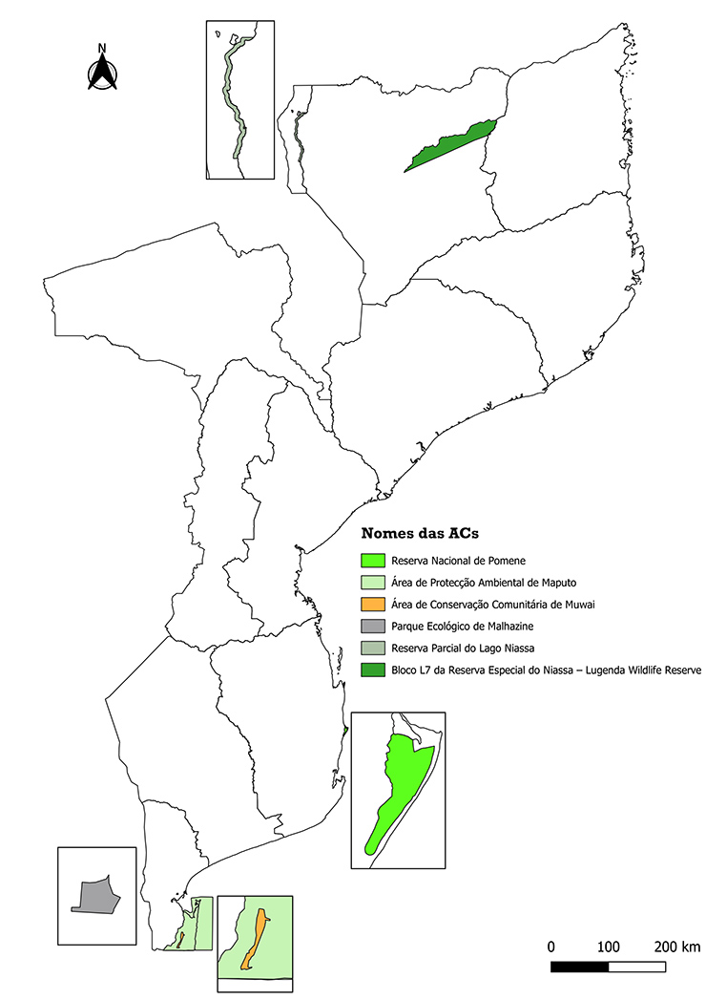

Projetos
Conservando a Biodiversidade de Moçambique
A BIOFUND apoia, financia e promove iniciativas que protegem os ecossistemas e a vida selvagem.
Programa de Conservação da Biodiversidade
A Fundação para a Conservação da Biodiversidade (BIOFUND) e a Agência Sueca para o Desenvolvimento Internacional (SIDA) assinaram, a 25 de Novembro de 2022, um acordo de cinco anos para o financiamento do Programa de Conservação da Biodiversidade em Moçambique. O programa visa melhorar a conservação da biodiversidade e fortalecer a capacidade de adaptação e resiliência climática no país, em estreita colaboração com a Administração Nacional das Áreas de Conservação (ANAC).
Contextualização
A Fundação para a Conservação da Biodiversidade (BIOFUND) e a Agência Sueca para o Desenvolvimento Internacional (SIDA) assinaram, a 25 de Novembro de 2022, um acordo de cinco anos para o financiamento do Programa de Conservação da Biodiversidade em Moçambique. O programa visa melhorar a conservação da biodiversidade e fortalecer a capacidade de adaptação e resiliência climática no país, em estreita colaboração com a Administração Nacional das Áreas de Conservação (ANAC).
Objectivo
Melhorar a conservação da biodiversidade e a adaptabilidade e resiliência às mudanças climáticas em Moçambique.
Áreas de abrangência
O Programa abrange 7 (sete) Áreas de Conservação localizadas nas regiões Norte, Centro e Sul de Moçambique. Essas áreas incluem locais de importância ecológica e biodiversidade significativa (KBAs), sendo elas:
